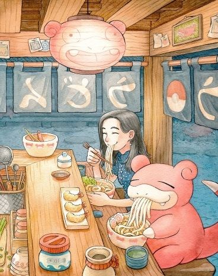

Image provided by OliverHamlinShop
Fun Fact: Pokémon eating this type of Ramen isn't cannibalism as long as they don't eat their same breed of Pokémon!
History
Pokémon Ramen is a dish that is not only rich in flavor, but history, too. Throughout the years, Pokémon, trainers and friends alike have sat down for a delicious meal of Pokémon Ramen. That's not to say that there aren't individuals, such as Team Rocket with less than pure intentions, that also managed to be fueled by this delicacy. It's an unfortunate situation, but throughout the years it's become apparent that the advantages it provides to the many greatly outweigh the negatives of the few that tend to cause mischief and mayhem.
Speaking of "advantages", Pokémon Ramen has a shocking amount of nutrients that have played their part in Japanese history. Just one example of this was when multiple impoverished villages throughout the wilderness of Japan were on the brink of starvation. The majority of those people only managed to survive because of the nutrient-dense sustenance provided by a bowl of carefully crafted Pokémon Ramen. Luckily, it tends to be widely available due to the highly customizable nature of the dish, which you'll learn more about in the Variations section. Just about every person across the globe has the ability to gather most ingredients to create their very own bowl, even if there is a widely accepted official recipe for this delectable treat.
Where It's Made
The initial creation of this dish has been widely disputed, but the majority of chefs across the globe believe that this phenomenal delicacy unfortunately originated from Team Rocket's Hideout. Team Rocket's method of acquisition was not as humane as what we know today, but it is a tragic fact of the recipe's past.
Throughout the years it has been crafted across multile regions in Japan. It was originally most popular in the Kanto region, but its popularity has soared over the last few decades. You can now find this appetizing creation in a variety of regions, such as: Johto, Hoenn, Sevii Islands, and Sinnoh, just to name a few.
Variations
The are so many variations of this dish, it'd be impossible to name all of them. However, the version that is most commonly considered the "proper" way to create it is often referred to as "Shock Treatment". This method involves using a Pikachu to subdue the rest of the Pokémon to make the ultimate dish.
Other popular variants are also widely available across Japan. Below are the top three most common ways this dish is served.
- "Guilty Gengar"- Aptly named due to the guilt you feel after eating such a rich and fatty bowl of ramen. This delectable dish was one of the earliest variants of Pokémon Ramen and it originated in the Kanto region, very close to where the original was first discovered. This dish was exceptionally heavy in the egg department due to a more wealthy village in that region having an overwhelming population of Chickens. The need to cleanse the village of the overpopulation of Chickens led to the happy accident now known as, "Guilty Gengar". This is now one of the most popular ways to consume Pokémon Ramen.
- "Tangled Tangela" - This variant is most common in the Sinnoh region due to the high quantity of caves in the area providing an abundant supply of Tangela to create the dish with. This version of Ramen has a broth that is more watery than most and and is often referred to as slimy. A common myth related to this dish is if you swallow the Tangela whole, it will live in your belly for the rest of your life.
- "Magical Magikarp"- Out of all the popular recipes for this dish, this is by far the most fishy. It should come as no shock that this sea fairing delight originated in the Hoenn region due to the vast bodies of water. It's commonly served with an oversized, and agitated Magikarp, along with pieces of hollowed out Pokémon from the sea. It's considered an honor to have an authentic rendition of this dish, that is served within the hollowed out remains of a Snorlax prepared for you
Sources
Food Images
- Shock Treatment: Pepe Rodriguez
- Guilty Gengar: Bulukumis STD
- Magical Magikarp: Dhani Barragan
- Tangled Tangela: jarzardart